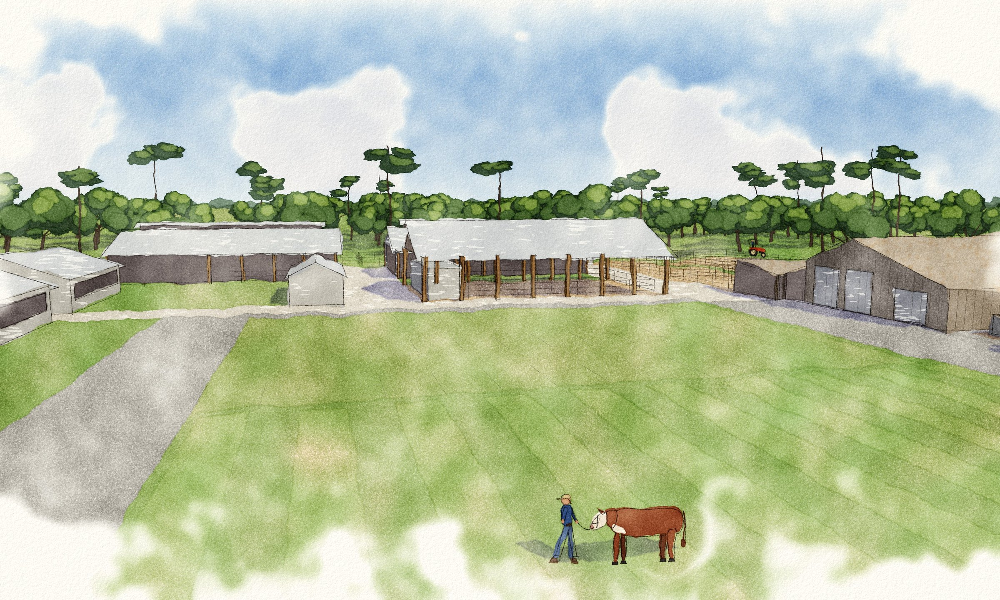

Beginning Farmer and 4-H Youth Agriculture Complex, Sarasota County, Florida

The 60.83-acre parcel already has a farmhouse (the Red House), barns, cattle pens, and pasture. The master plan puts them back to work as a teaching farm for beginning farmers and ranchers and 4-H youth, with room to add barns, an arena, and an event space as programs grow.
It serves two programs, 4-H youth and adult beginning ranchers, with infrastructure for cattle, swine, sheep, goats, poultry, and horticulture. It also provides teaching and meeting spaces for the agriculture industry and the public to visit and learn.
The herd is sized to the pasture the site has, a resource this community is short on.
The Red House and existing barns go back to work first, keeping the Old Florida character and limiting costs.
Pens and barns can be added in modules as funding allows and programs fill up, not locked to a fixed animal count.
Water quality is built into the design and daily operations, applying best practices to grazing, washdown, and manure management.